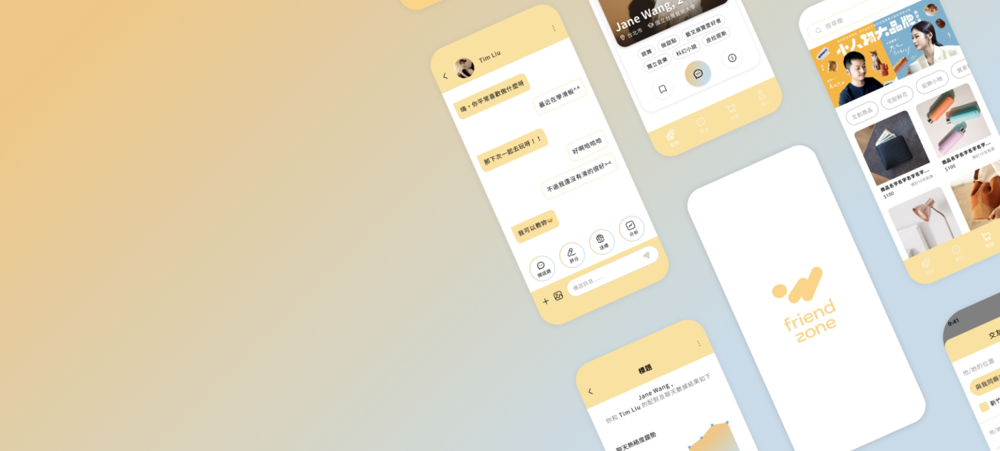
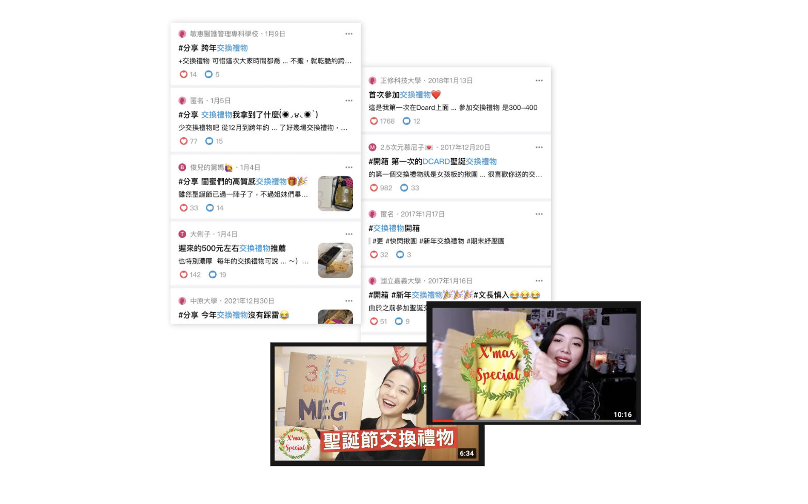
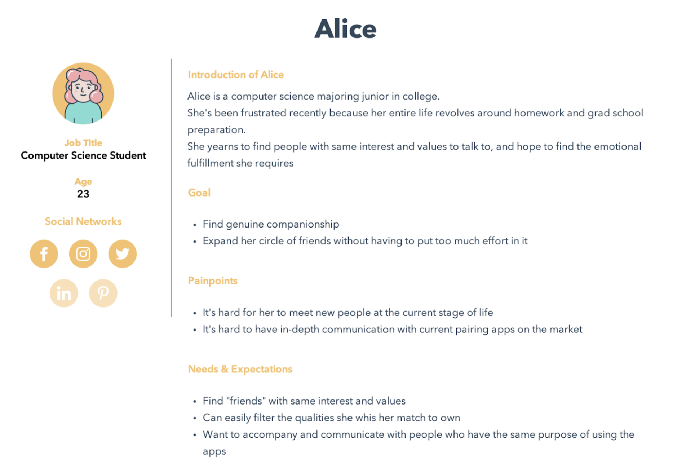
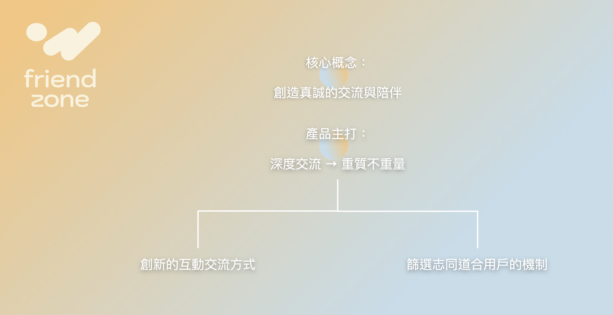
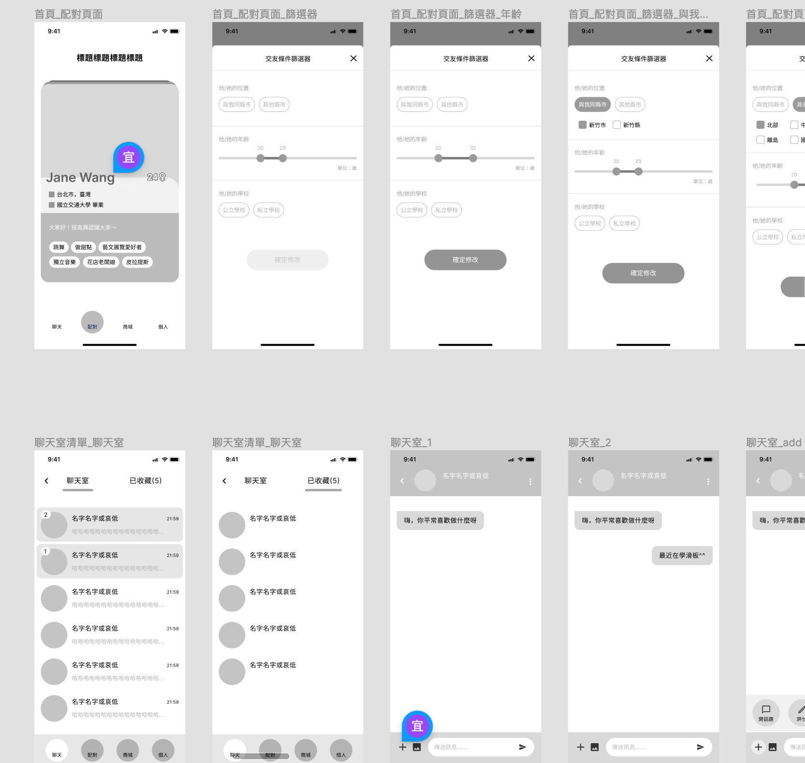
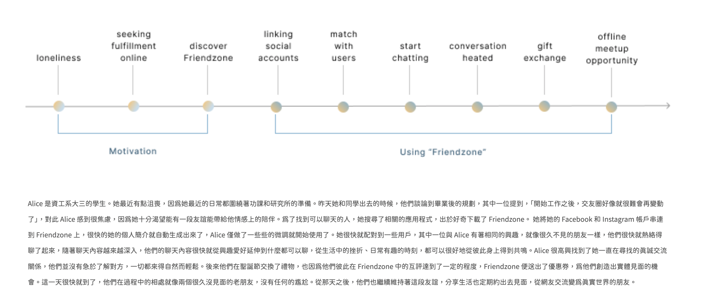
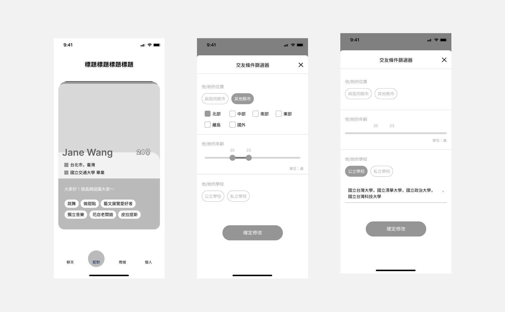
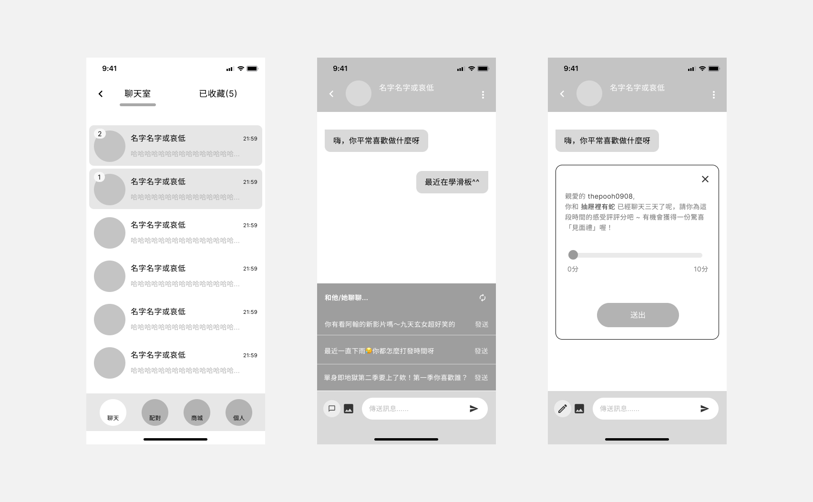
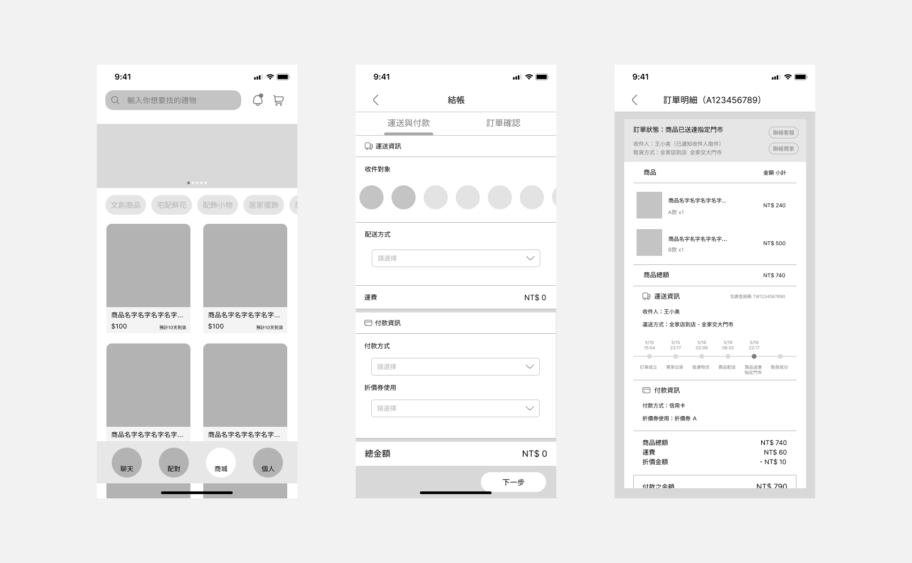

Friend Zone 為兩人共組的 Side Project。Friend Zone 為一款致力於幫助使用者獲得最需要的陪伴與友誼建立的 App，不同於市面上以尋找另一半為目的的交友軟體，Friend Zone 強調的是友誼的建立與情感上的陪伴，透過競品分析與 TA 訪談，我們希望透過交換禮物的機制，藉此結合線上與線下遞進的互動，以此幫助使用者找到真正適合的朋友，拓展現實生活中的交友圈。
現象觀察
從日常生活的經驗中，我們注意到社交媒體上的女性使用者的節慶型互動內容，包括 Dcard 女生版在聖誕節、跨年期間常見的交換禮物活動，抑或美妝、生活型的女性 Youtuber 在節日期間也很盛行的交換禮物影片主題。

這便激起了我們的好奇心，想去了解這種內容盛行的原因。
透過桌面研究，我們發現這些盛行於年輕、大學女性的內容主要源自於下列原因：
• 孤寂感
• 大學的交友圈已定型，較難有機會認識新的人
• 節慶氣氛催化
而孤寂感與大學交友圈為相互影響的關係，交友圈定型產生了一定的孤寂感，反之，孤單寂寞的產售也會降低年輕、大學女性踏出去邁向新交友圈的意願。也因此，我們打算以「交友軟體」的方式，來滿足所觀察到的困難與需求。
研究調查
競品分析
有了初步切入的方式後，我們以競品分析的方式，調查了六個與「交友、交流」較為相關的直接與間接競品，包含 Slowly、心交 hearting、Rooit、Eatgether、小紅書與 Pikabu。
我們將主要的專注點放在：
• 對於市場現況與競品的基本了解
• 市場上尚未被滿足的需求
• 競品的優勢與缺失
使用者研究
隨後我們訪問了四位有曾經使用過交友軟體、交友服務的女大學生，半結構式的訪談主要聚焦在了解他們使用相關資源的原因，以及這些需求是否有被很好的滿足。訪談結果利用親和圖（Affinity Diagram）進行分析。

透過質化研究我們歸納出了我們的 Persona Alice，幫助我們更加了解且聚焦目標受眾的樣貌。
綜合兩項研究資料，我們發現大學女生們在尋找的其實是：
• 真誠的陪伴交流
• 完美的配對
而這些更具體的需求也仍未被市場上面相關的產品與服務滿足：
• 專注於純交友， 而非約炮或尋找另一半的服務
• 深層交流與交心的期望未被滿足
• 市面上的配對機制所配對到的人不符合所需
產品定位

核心概念
創造真誠的交流與陪伴
主要理念
強調深度交流模式。雖然當今通過網絡認識新的人並不少見，但能夠讓雙方進行深入交流的產品和服務還是比較少見。我們希望以「重質不重量」的方式來滿足目標族群
尋求真正聯繫的需求。
特色功能
以交換禮物的方式整合線上與線下的互動，並以遞進的方式將互動自然的轉入線下，同時整合個人社交平台的資訊，將使用者操作的前置成本降至最低。
Wireframe & Flow
UI Flow
隨後我們進行了初步的 Wireframe 的繪製，以 UI Flow 的方式更細節的定調出使用流程與介面樣貌。

使用情境（User Senarios）
在初步提出 Friendzone 的產品規劃後，我們以 Alice 的角度歸納出 User Scenarios 與產品接觸點。

Wireframe 定調
後續進行了 wireframe 更細部的繪製，並利用 wireframe 進行 usability testing 與數次迭代。


